Table of Contents
Boolean Arithmetic
Binary numbers
- Representing numbers
- Binary to Decimal
- Maximum value represented by k bits
- Decimal to Binary
以十进制的数除以所要转换的进制数,把每次除得的余数保留,所得的商数继续除以进制数,直到余数为0时止.
如把100转换成八进制:
1
2
3
4100/8=12...4
12/8=1.....4
1/8=0......1
#把相应的余数从低向高顺着写出来,如上的为144,此即为100的八进制表示形式.如100转换为十六进制:
1
2
3
4
5
6
7
8
9
10
11
12
13100/16=6....4
6/16=0......6
```
- 如100转换为二进制:
```BASH
100/2=50....0
50/2=25.....0
25/2=12.....1
12/2=6......0
6/2=3.......0
3/2=1.......1
1/2=0.......1
#所以100的二进制表示形式为1100100;
Addition
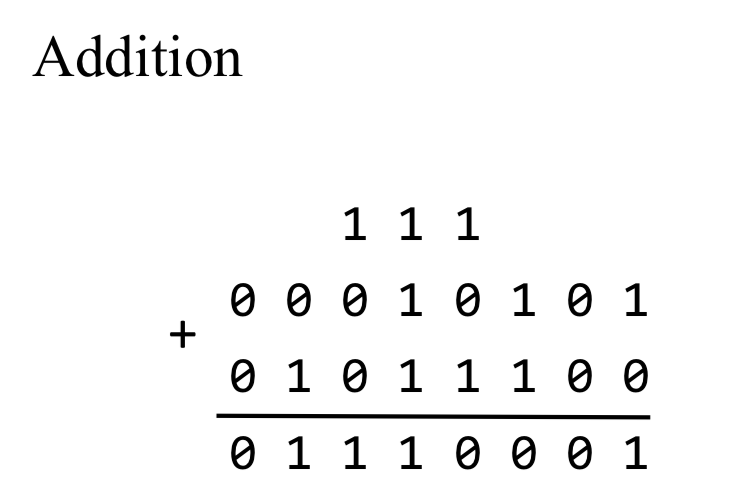
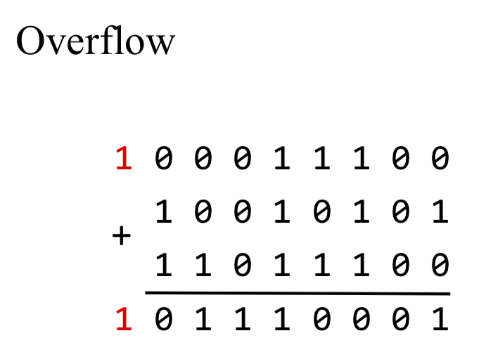
Building an Adder
- Half adder: adds two bits
- Full adder: adds three bits
- Adder: adds two integers
Half adder
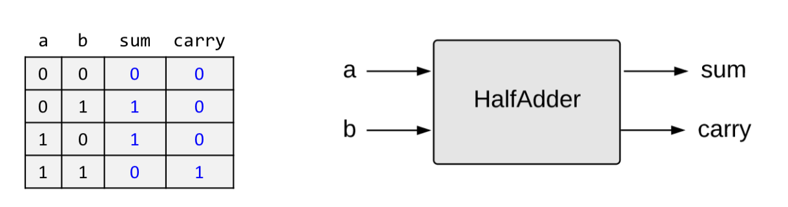
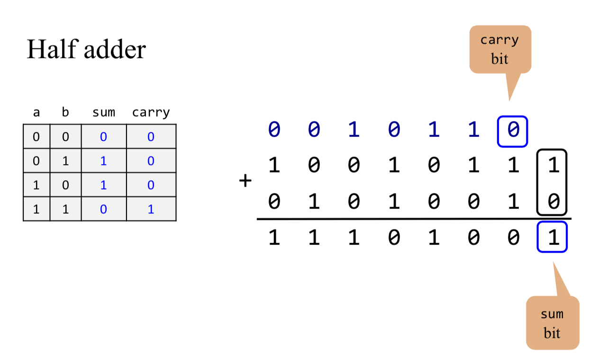
1 |
|
Full adder
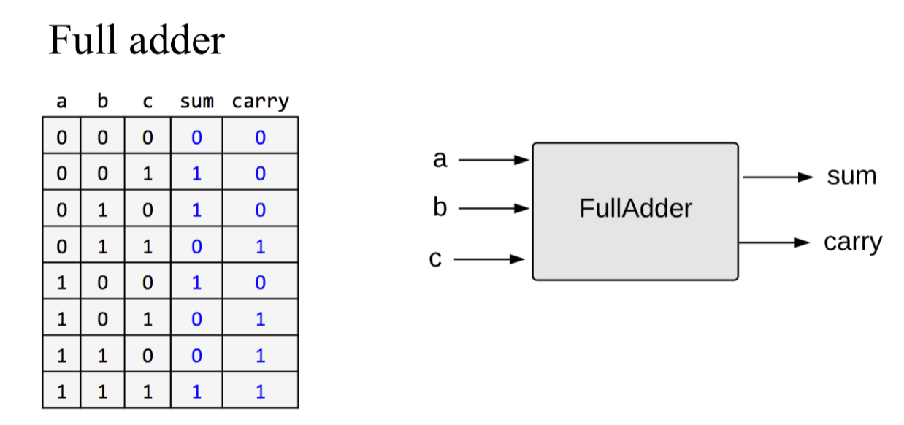
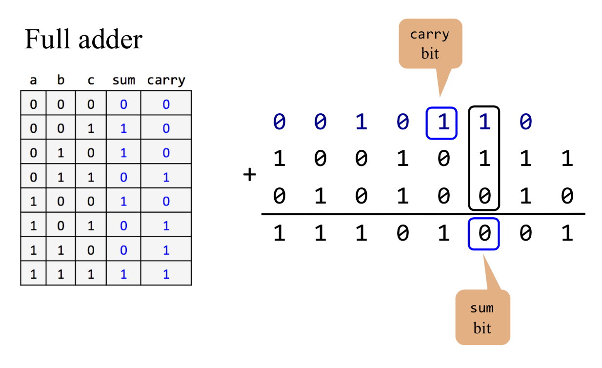
1 | /** |
Multi-bit Adder
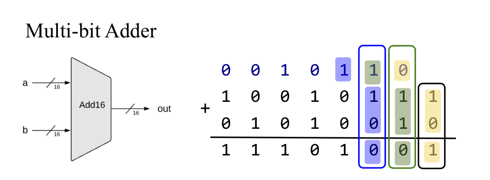
1 | /** |
Negative numbers
- Possible Solution: use a sign bit
Use the left-most bit to represent the sign, -/+; Use the remaining bits to represent a positive number
1 | 0000-----0 |
Complications:
- different representation of 0 and -0
- x + (-x) != 0
- more complication
- Two’s Complement
Represent the negative number $-x$ using the positive number $2^n - x$
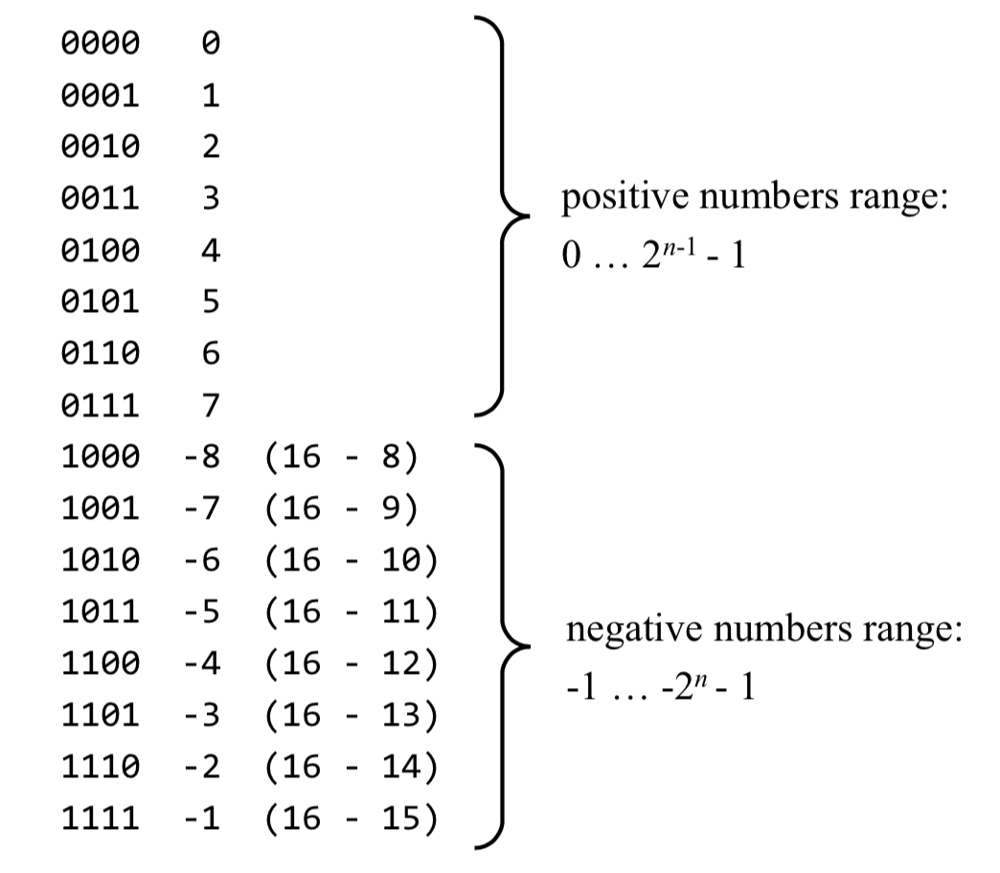
- Computing $-x$
Input: x
Output: -x (in two’s complement)
Idea:
- $2^{n} - 1 = 11111111_{2}$
- $11111111_{2} - x$ means flip all the bits of x
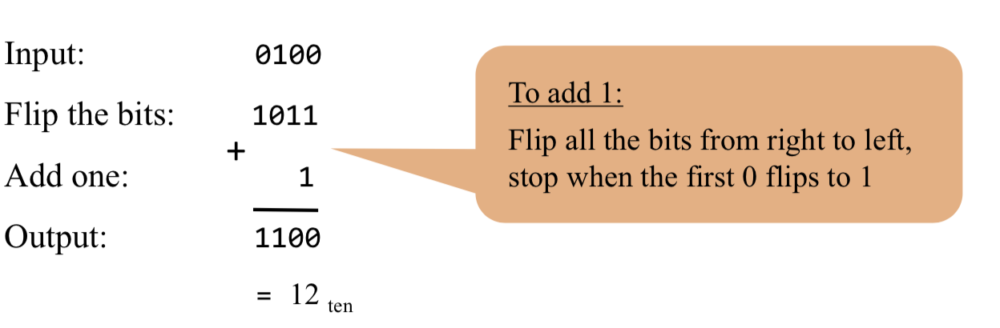
Arithmetic Logic Unit
Von Neumann Architecture
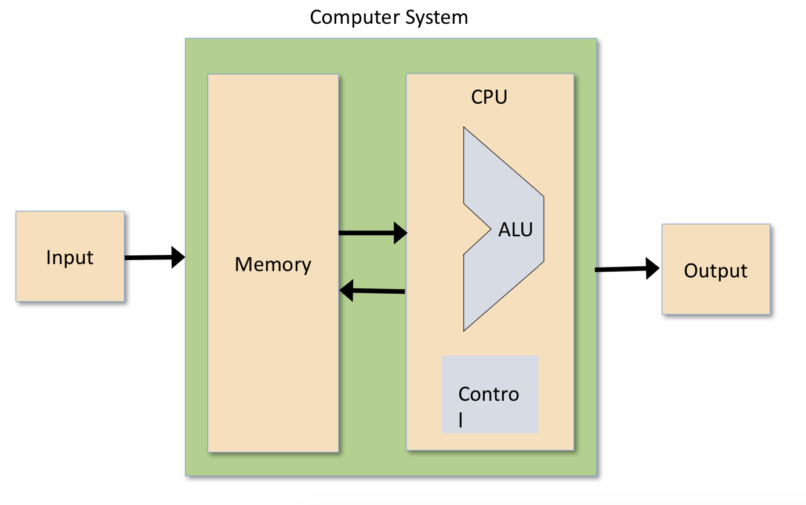
The Hack ALU
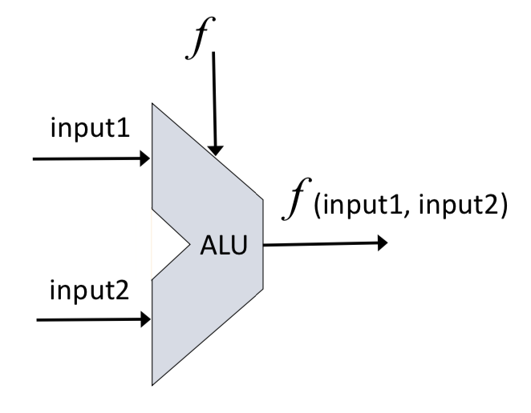
- The ALU computes a function on the two inputs, and outputs the result
- $f$: one out of a family of pre-defined arithmetic and logical functions
- Arithmetic functions: integer addition, multiplication, division,…
- logical functions: And, Or, Xor, …
Which functions should the ALU perform?
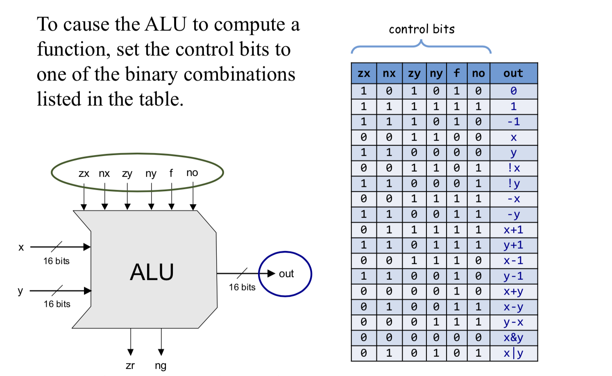
two control bits
1
2if (out == 0) then zr = 1, else zr = 0
if(out<0) thenng=1,else ng=0Example
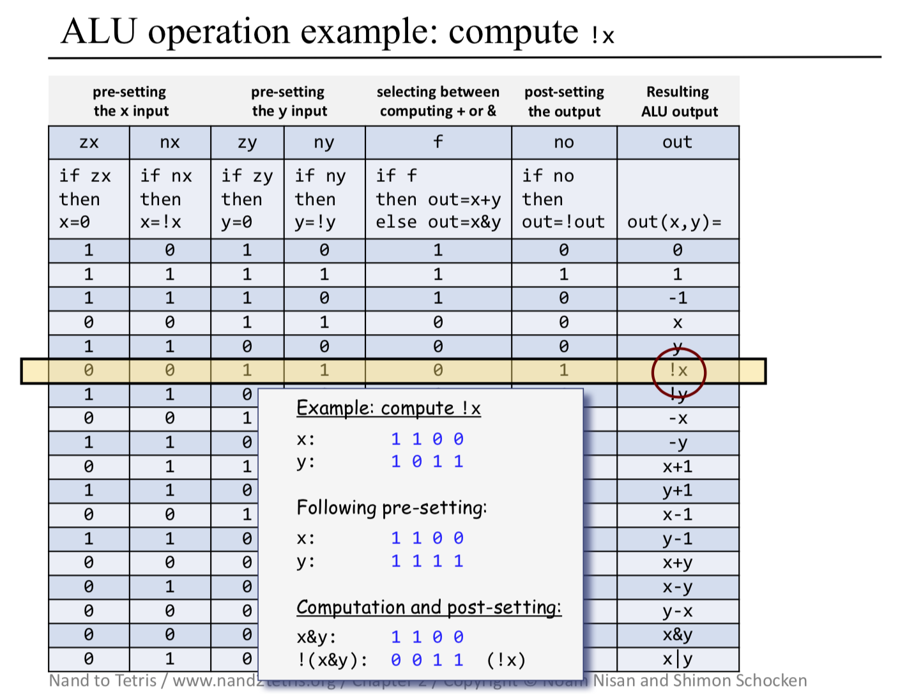
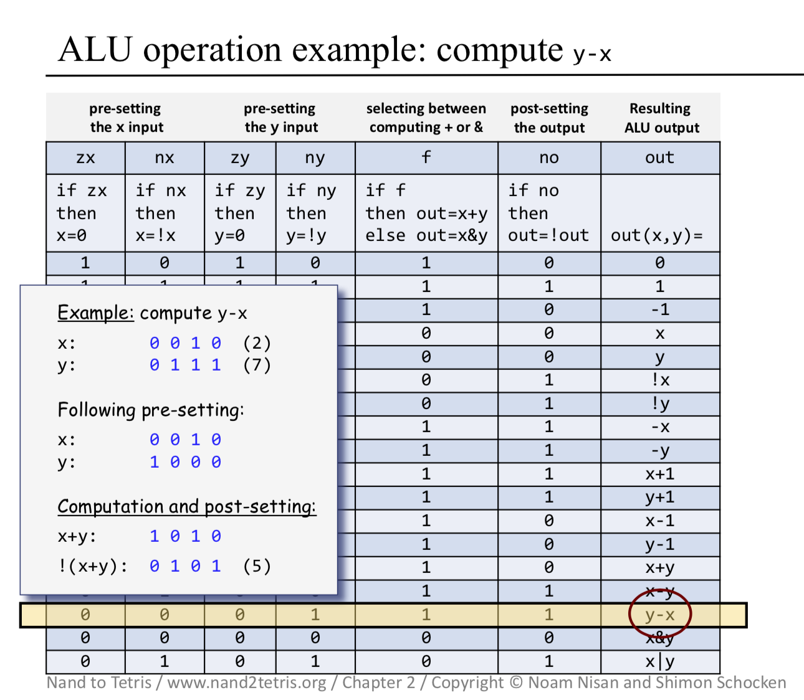
1 | /** |